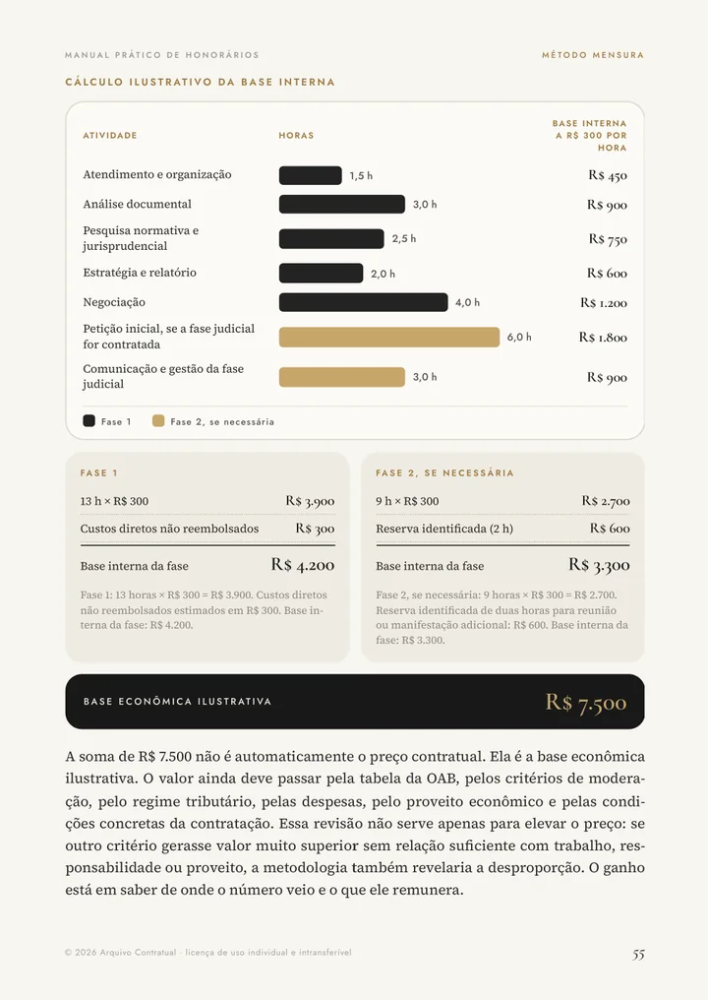
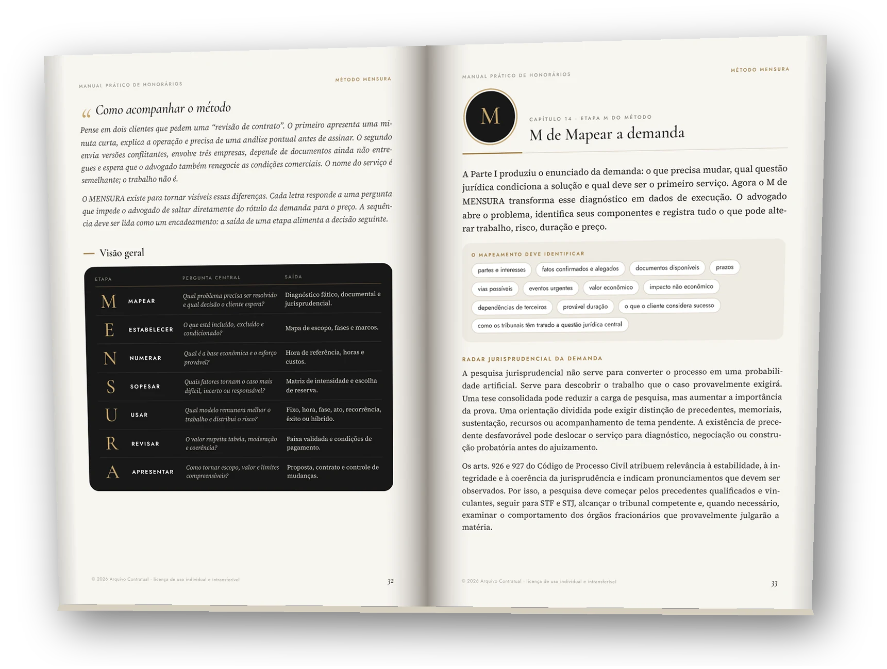
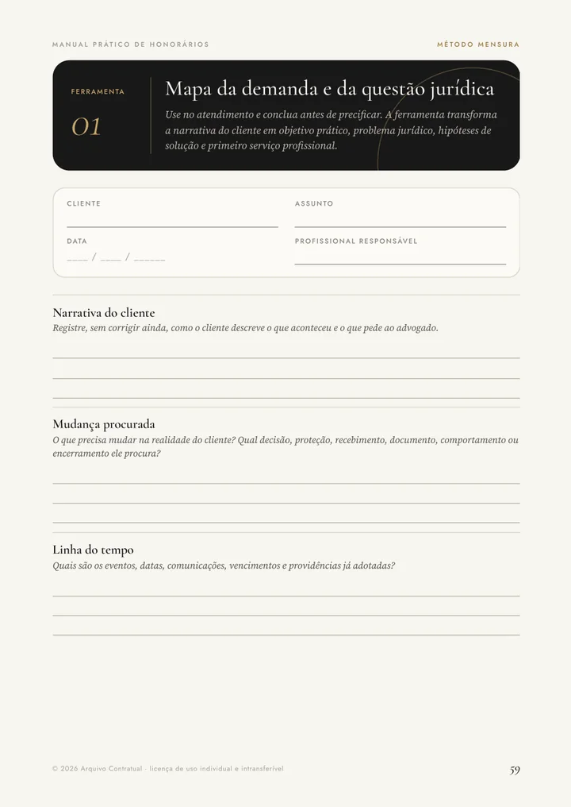
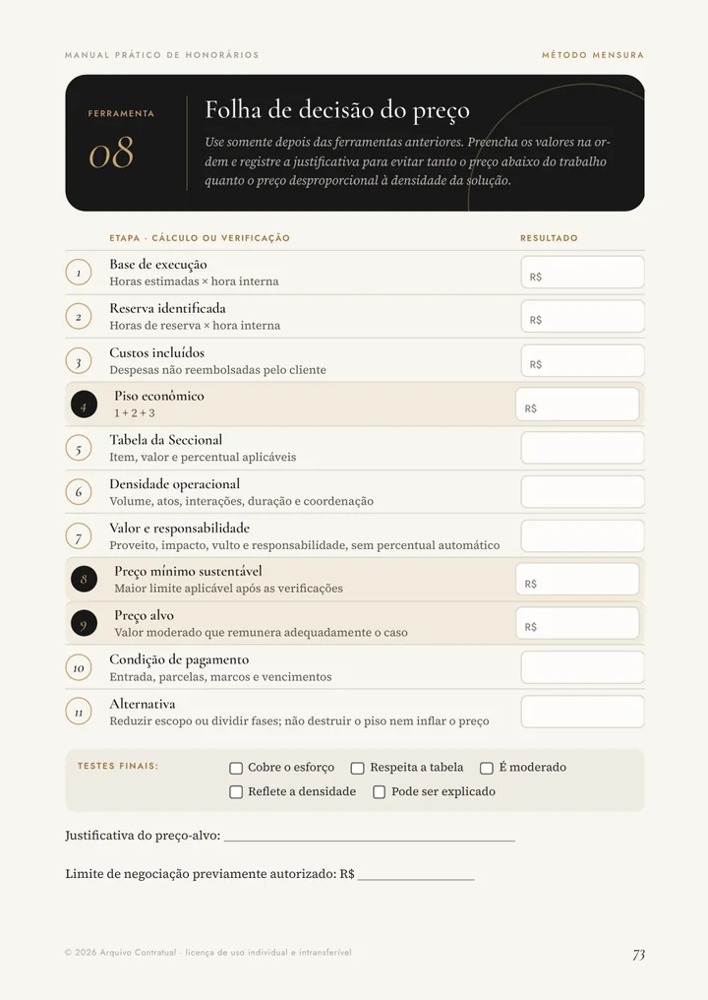
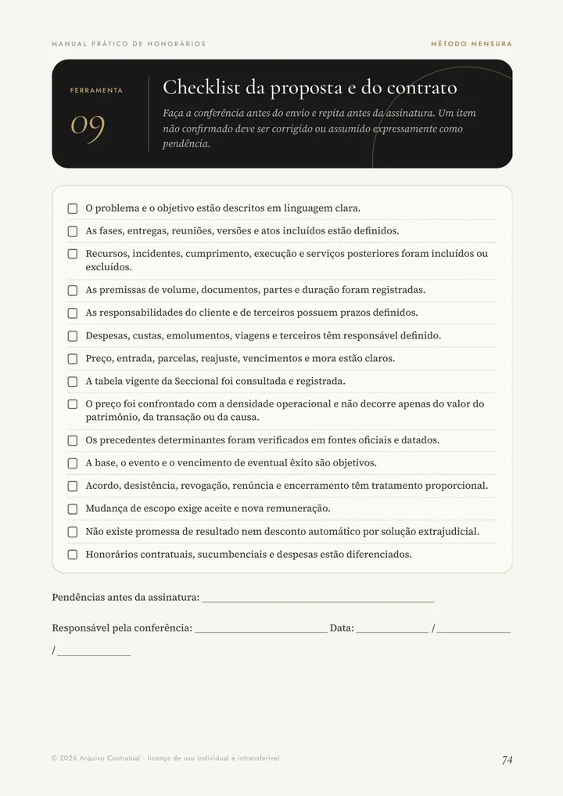

Hoje você pensa
“O cliente fala, fala… e eu não sei o que ele realmente precisa.”
Entender o pedido do cliente. Você separa o que aconteceu, o que ele quer e qual é o problema jurídico. Assim você sabe qual serviço oferecer.
O Método MENSURA é um passo a passo para entender o caso antes de cobrar. Serve para qualquer área do Direito.
Você cobra pouco e depois descobre que o trabalho era muito maior.
Você cobra demais e o cliente vai embora.
Você dá desconto sem saber se ainda está pagando o seu trabalho.
O erro não está no preço. Está em dar o preço antes de entender o caso.
Quem erra o preço começa pelo número. O MENSURA inverte a ordem: primeiro você entende o caso, depois define o serviço e só no fim calcula o valor.
O valor sai antes de você saber quanto trabalho o caso vai dar. Aí vem trabalho de graça, desconto ou cliente perdido.
O valor vem do trabalho real: horas, custos, risco e forma de cobrar. Você consegue explicar cada parte para o cliente.
Este é o caso guiado do manual. Mude o valor da sua hora e veja como o preço passa a ter uma explicação.
Uma empresa quer cobrar R$ 120.000 de um fornecimento. Tem contrato, notas fiscais e mensagens, mas o devedor questiona parte da entrega. O cliente quer tentar negociar antes de entrar com processo.
Com o método, o advogado divide o trabalho em duas fases:
Assim o cliente paga primeiro pelo que é certo, e o restante só se o caso avançar.

Exemplo hipotético do manual, com hora ilustrativa de R$ 300. Não é preço de mercado. Depois desse cálculo, o método confere a tabela da Seccional, os tributos e o caso concreto antes de chegar ao valor final.
O manual traz um roteiro de 15 minutos para usar com o cliente na sua frente. Dez passos, sempre na mesma ordem.
“O cliente fala, fala… e eu não sei o que ele realmente precisa.”
Entender o pedido do cliente. Você separa o que aconteceu, o que ele quer e qual é o problema jurídico. Assim você sabe qual serviço oferecer.
“Combino um preço e o trabalho não acaba nunca.”
Deixar claro o que está incluído. Você escreve o que vai fazer, o que não vai e o que acontece se o caso mudar. Trabalho extra vira cobrança extra.
“Não sei quanto vale o meu trabalho.”
Transformar o seu esforço em número. Você calcula o valor da sua hora, estima as horas do caso e chega a um valor mínimo que paga o seu trabalho.
“Tenho medo de cobrar errado ou fora da tabela da OAB.”
Escolher a forma certa de cobrar. Valor fixo, por hora, por fase, mensal ou por êxito. E você confere com a tabela da sua Seccional e as regras de ética antes de enviar.
“Na hora de falar o preço, eu travo. E o cliente pede desconto.”
Apresentar o preço sem travar. Você entrega uma proposta escrita que mostra o que será feito. O cliente entende o valor, e você não precisa prometer resultado.
“Cada orçamento eu começo do zero.”
Acertar mais a cada caso. No fim de cada trabalho, você anota quanto tempo levou de verdade. O próximo preço sai mais rápido e mais certo.
Cada letra é uma pergunta simples que você responde antes de dar o preço. Cada uma tem uma ferramenta pronta no manual.
O que aconteceu e o que o cliente quer?
O que está incluído no serviço e o que não está?
Quantas horas e quanto custa o seu trabalho?
O caso é difícil, urgente ou arriscado?
Qual a melhor forma de cobrar: fixo, hora, fase, mensal ou êxito?
O valor respeita a tabela da OAB e é justo?
Como mostrar a proposta para o cliente aceitar?

Esquemas visuais, exemplos práticos e quadros para preencher. Você aprende lendo e já aplica no próximo atendimento.
Ouvir o cliente, entender o que ele quer e descobrir qual é o problema jurídico.
Por que advogados cobram de menos ou de mais, e como evitar cada erro.
Estatuto da Advocacia, Código de Ética, tabela da Seccional e os limites da cobrança.
As 7 etapas, do pedido do cliente à apresentação do valor.
Fixo, por hora, por fase, por ato, mensal, por êxito ou misto: quando usar cada um.
Imobiliário, família, empresarial, contencioso, criminal e um caso guiado completo.
As 10 folhas para preencher: mapas, cálculos, matrizes, checklist e registro.
Um roteiro de 15 minutos para cada atendimento e um plano de 30 dias para o escritório.



Cada ferramenta é uma folha que você preenche com os dados do caso e reutiliza nos próximos atendimentos. Juntas, elas mostram todo o trabalho que normalmente fica escondido.
A Skill MENSURA é uma inteligência artificial treinada com o conteúdo e as ferramentas do manual. Ela não pula direto para um preço: primeiro entende o caso com você.
A Skill já está pronta e vem junto com o manual, com guia de instalação. Ela não define o preço e não substitui parecer, pesquisa ou estratégia: a decisão final é sempre sua. Portais de tribunais podem limitar a busca, por isso o dossiê mostra o que foi encontrado e o que não pôde ser confirmado. Para usar a Skill, você precisa de uma conta no ChatGPT; a pesquisa na internet depende do que está ativado na sua conta.
Entrou há pouco na advocacia ou começou a atender um novo nicho.
Já tem experiência, mas ainda decide o preço pela intuição.
Faz tarefas que não estavam previstas ou usa percentuais sem explicar ao cliente.
Do atendimento ao contrato, no consultivo, no extrajudicial ou no contencioso.
Conferência de documentos, regularização, negociação, promessa de compra e venda.
Urgência, provas, patrimônio, convivência, conflito e execução.
Muitos documentos, versões, padronização, negociação e serviço mensal.
Fases, recursos, duração, provas e a diferença entre valor da causa e trabalho real.
Atendimento imediato, primeiros atos, investigação, plantão e fases seguintes.
Um caso completo, do diagnóstico ao cálculo e à decisão do preço.
Se o manual evitar um único orçamento errado, um trabalho feito de graça ou um cliente perdido por preço mal explicado, ele já se pagou.
Não gostou? Peça o reembolso. Sem perguntas e sem complicação. O dinheiro volta inteiro.
Uma das melhores plataformas do mercado. Entre pelo computador ou celular.
Compra feita pelo checkout da Hubla.
Dar o preço no susto, torcer para o caso não crescer e começar cada orçamento do zero.
Entender o caso, calcular com as ferramentas e entregar uma proposta que o cliente entende. Com 7 dias para testar sem risco.
Não. Um preço único não serviria para todas as áreas, regiões, escritórios e casos. O manual ensina você a chegar a uma faixa de valor que se justifica, com os dados do seu escritório e do caso.
Sim. A sequência é sempre a mesma: entender o caso, definir o serviço, calcular o esforço, avaliar o risco, escolher a forma de cobrar, revisar e apresentar. O que muda são os fatos e as fontes de cada área.
Sim. O manual começa antes do preço, ensinando a entender o pedido do cliente. Quando o caso for além do que você conhece, o método ajuda a perceber que é hora de pesquisar, cobrar um diagnóstico, pedir apoio ou encaminhar.
Sim. O método transforma a sua experiência em critérios anotados e ferramentas que você repete e melhora a cada caso.
Não. A tabela da sua Seccional é uma etapa obrigatória do método. Ele não cria uma tabela paralela e não autoriza cobrar abaixo dos limites.
Não. A primeira função dela é montar o dossiê do caso. Depois que você confere, ela ajuda a aplicar as ferramentas do MENSURA, mas custos, tabela da Seccional, pesquisa, escopo e decisão final continuam sendo responsabilidade sua.
Não. O dossiê organiza fatos, lacunas, hipóteses, documentos e o trabalho provável. Ele é a base do seu raciocínio, não substitui pesquisa, conferência, parecer ou estratégia.
Sim, quando a pesquisa na internet está ativada no seu ChatGPT. Ela busca leis, súmulas e decisões, inclusive de tribunais estaduais, prioriza fontes oficiais e anota os dados para você conferir. Como os portais podem limitar o acesso, confira sempre o texto completo na fonte oficial.
Sim. Quando o assunto exigir conhecimento muito específico, ela avisa o limite, indica o que pesquisar ou o apoio necessário e evita conclusões sem base.
Para ler o manual e usar as ferramentas, não. Para usar a Skill, você precisa de uma conta no ChatGPT. Planos ou assinaturas da plataforma não estão incluídos na compra.
São modelos editáveis para transformar o diagnóstico em contratação. Você adapta à sua área, ao serviço, à tabela da Seccional e às condições combinadas com o cliente.
O roteiro de 15 minutos você usa já no próximo atendimento. O manual também traz um plano de 30 dias para colocar o método em prática no escritório.
O manual é um livro digital em PDF, com as 10 ferramentas prontas para preencher.
Na Hubla, uma das melhores plataformas do mercado, numa área de membros só do MENSURA. Após a confirmação do pagamento, você recebe o acesso ao manual, às ferramentas, à Skill e ao guia de instalação.
Você tem 7 dias de garantia e o direito de arrependimento. Peça o reembolso dentro desse prazo: sem perguntas, sem justificativa e sem complicação. O valor volta inteiro.
Fale com a nossa equipe pelo WhatsApp. Respondemos sobre o conteúdo, a Skill, o acesso pela Hubla e a garantia, antes de você decidir.
P.S.: Você recebe o manual de 83 páginas, as 10 ferramentas, os modelos de proposta e de contrato, os 6 casos aplicados e a Skill MENSURA para ChatGPT, tudo na Hubla, por R$ 67,90. Se em 7 dias achar que não é para você, pede o reembolso e recebe tudo de volta. Sem perguntas.